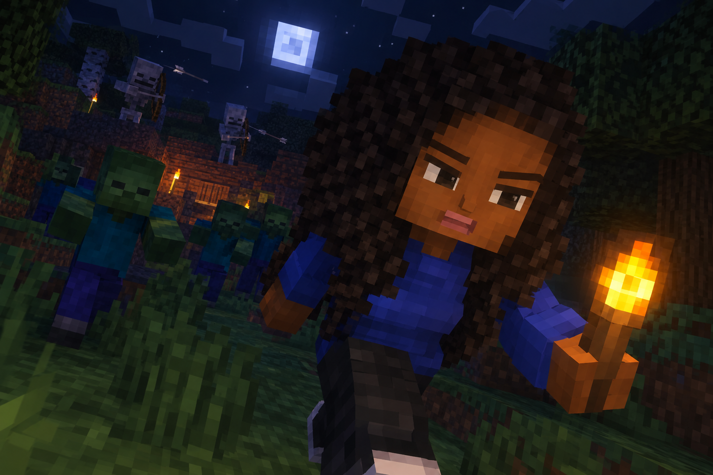

My First Night in Survival Mode

Every Minecraft player remembers their first night in Survival mode. I spawned near a small village and spent the whole first day punching trees, collecting wood and crafting my first tools. By the time the sun started to set, I had a wooden pickaxe, a sword and just enough cobblestone to build a tiny shelter on the side of a hill.
When night fell, the zombies and skeletons came out and I could hear a creeper hissing somewhere outside my wall. I stayed inside, crafted a furnace and cooked some food until morning. The next day I finally found iron, made a proper set of tools and started building a real house near the village. Lesson learned: always build your shelter before the sun goes down!